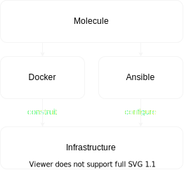
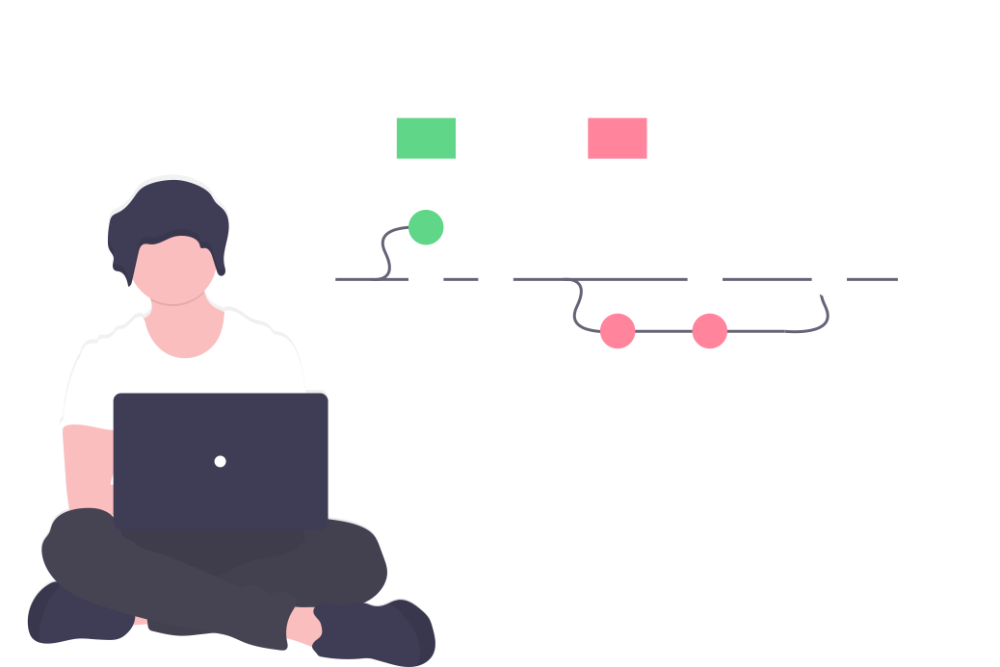
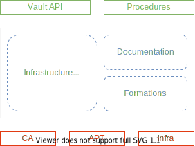

La Protection des Actifs grâce à une bonne Gestion du Secret
Rappels
“ Pour une entreprise comptant plusieurs dizaines d’équipes aux méthodes et cultures diverses, commment limiter l’exposition aux cyberattaques de ses actifs et de son image en évitant la fuite de ses secrets sensibles ? ”
“ Une entreprise comptant plusieurs dizaines d'équipes ”
“ Méthodes et cultures diverses ”
“ Limiter l'exposition aux cyberattaques ”

“ Protéger les actifs et l'image ”


“ Empêcher la fuite des secrets sensibles ”

Solution - CERBERE


Methodes de développement

Problématique
“ Comment les pratiques et technologies SRE permettent d'apporter un cadre sain et sécurisé nécessaire au déploiement d'une plateforme de coffre-fort numérique ?”
S. R. E.
- Infrastructure As Code
- Tests Automatisés
- Intégration Continue
- Approche Produit
S ite
R reliability
E ngineering


| + | - | |
|---|---|---|
| OPS | Sécurité | Lourdeur |
| DEV | Agilité | Sécurité |
Infrastructure As Code
Tests Automatisés
Intégration / Déploiement Continue
Approche Produit
Concept

Technologie

Fonctionnement

Jack

Inventaire
all:
children:
secrets:
children:
dc1:
hosts:
aa08srvcerfg001.cdweb.biz:
cluster: A04NTNXAL001
datacenter: DC1
domain: cdweb.biz
interface0network: LAN-RCT-1000
interface1subnet: VLAN 146 - LDC
os: Debian 10
[...]
aa08srvcervt001.cdweb.biz:
cluster: A04NTNXAL001
datacenter: DC1
domain: cdweb.biz
interface0network: LAN-RCT-1000
interface1subnet: VLAN 146 - LDC
os: Debian 10.4
[...]
aa08srvcervt002.cdweb.biz:
cluster: A04NTNXAL001
datacenter: DC1
domain: cdweb.biz
interface0network: LAN-RCT-1000
interface1subnet: VLAN 146 - LDC
os: Debian 10.4
[...]
aa08srvcervt003.cdweb.biz:
cluster: A04NTNXAL001
datacenter: DC1
domain: cdweb.biz
interface0network: LAN-RCT-1000
interface1subnet: VLAN 146 - LDC
os: Debian 10.4
[...]
dc2:
hosts:
aa08srvcerfg002.cdweb.biz:
cluster: A02NTNXBW001
datacenter: DC2
domain: cdweb.biz
interface0network: LAN-HPROD-1000
interface1subnet: VLAN 146 - PAR
os: Debian 10
[...]
aa08srvcervt004.cdweb.biz:
cluster: A02NTNXBW001
datacenter: DC2
domain: cdweb.biz
interface0network: LAN-HPROD-1000
interface1subnet: VLAN 146 - PAR
os: Debian 10.4
[...]
aa08srvcervt005.cdweb.biz:
cluster: A02NTNXBW001
datacenter: DC2
domain: cdweb.biz
interface0network: LAN-HPROD-1000
interface1subnet: VLAN 146 - PAR
os: Debian 10.4
[...]
aa08srvcervt006.cdweb.biz:
cluster: A02NTNXBW001
datacenter: DC2
domain: cdweb.biz
interface0network: LAN-HPROD-1000
interface1subnet: VLAN 146 - PAR
os: Debian 10.4
[...]
fragments:
hosts:
aa08srvcerfg001.cdweb.biz: {}
aa08srvcerfg002.cdweb.biz: {}
vault:
hosts:
aa08srvcervt001.cdweb.biz: {}
aa08srvcervt002.cdweb.biz: {}
aa08srvcervt003.cdweb.biz: {}
aa08srvcervt004.cdweb.biz: {}
aa08srvcervt005.cdweb.biz: {}
aa08srvcervt006.cdweb.biz: {}
ungrouped: {}
Architecture de la solution

Répartition des rôles


Définition de l'infrastructure
---
- hosts: "{{ groups['dc1'] | intersect(groups['vault']) }}"
roles:
- role: vault-server
vars:
ca_directory: /home/tristan/Desktop/vault_sandbox_ca/
us_directory: /home/tristan/Desktop/vault_sandbox_us/
secret_shares: 2
secret_threshold: 1
ha_endpoint: >-
{{ hostvars[ansible_play_hosts[0]]
['ansible_facts']['default_ipv4']['address'] }}
- hosts: "{{ groups['dc2'] | intersect(groups['vault']) }}"
roles:
- role: vault-server
vars:
ca_directory: /home/tristan/Desktop/vault_sandbox_ca/
us_directory: /home/tristan/Desktop/vault_sandbox_us/
secret_shares: 2
secret_threshold: 1
ha_endpoint: >-
{{ hostvars[ansible_play_hosts[0]]
['ansible_facts']['default_ipv4']['address'] }}
- hosts: fragment
roles:
- role: fragment-server
vars:
cacert: /home/tristan/Desktop/vault_sandbox_ca/ca.pem
keys: >-
{{ lookup('file', '/home/tristan/Desktop/vault_sandbox_us/keys')
| from_json }}
...
Architecture du code
Infrastructure As Code
Tests Automatisés
Intégration / Déploiement Continue
Approche Produit
Concept
Technologies


Fonctionnement
Architecture du code

Create
---
dependency:
name: galaxy
driver:
name: docker
platforms:
- name: fragment001
groups: [ "fragment" ]
image: docker-debian-systemd
pre_build_image: true
privileged: true
volumes: [ "/sys/fs/cgroup:/sys/fs/cgroup:ro" ]
command: "/lib/systemd/systemd"
- name: vaultmock001
groups: [ "vault" ]
image: docker-debian-systemd
pre_build_image: true
privileged: true
volumes: [ "/sys/fs/cgroup:/sys/fs/cgroup:ro" ]
command: "/lib/systemd/systemd"
- name: vaultmock002
groups: [ "vault" ]
image: docker-debian-systemd
pre_build_image: true
privileged: true
volumes: [ "/sys/fs/cgroup:/sys/fs/cgroup:ro" ]
command: "/lib/systemd/systemd"
provisioner:
name: ansible
verifier:
name: ansible
...
Converge
---
- name: Converge CA
hosts: all
vars:
ca_dir: "/tmp/molecule_fragment_ca/"
tasks:
- import_tasks: mock_ca.yml
- name: Converge vault mocks
hosts: vault
vars:
sslbase: "/etc/nginx/ssl/"
ca_directory: "/tmp/molecule_fragment_ca/"
certfile: "{{ ca_directory }}/{{ inventory_hostname }}.pem"
keyfile: "{{ ca_directory }}/{{ inventory_hostname }}.key"
tasks:
- import_tasks: mock_vault.yml
- name: Converge fragments
hosts: fragment
tasks:
- name: "Include fragment"
include_role:
name: "fragment-server"
vars:
cacert: '/tmp/molecule_fragment_ca/ca.pem'
keys: "{{ '[\"foo\"]' | from_json }}"
... Test
- name: Verify vault unseal
hosts: vault
tasks:
- name: Get nginx logs
command: tail -n 1 /var/log/nginx/access.log
register: nginx_log
- assert:
that: nginx_log.stdout is search("PUT /v1/sys/unseal .* 404")

Infrastructure As Code
Tests Automatisés
Intégration / Déploiement Continue
Approche Produit
Concept
Technologies
Fonctionnement

Pipline
Architecture du code

Infrastructure As Code
Tests Automatisés
Intégration / Déploiement Continue
Approche Produit
Concept

Technologies

Fonctionnement


Architecture du code